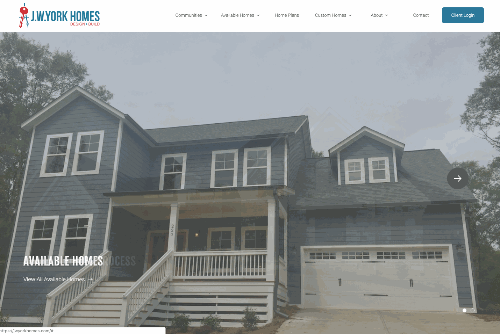
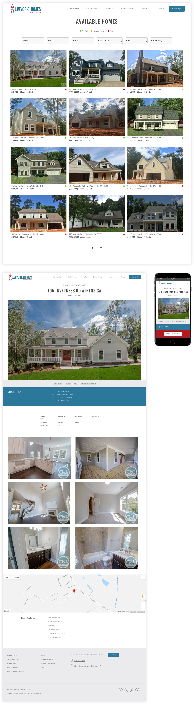
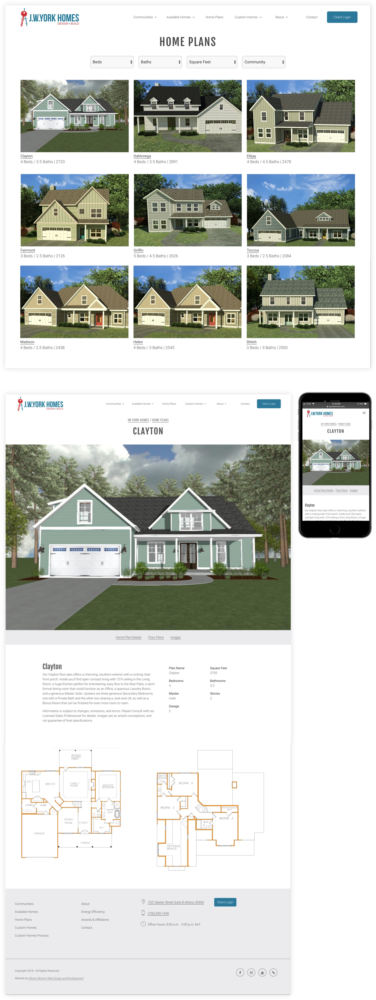
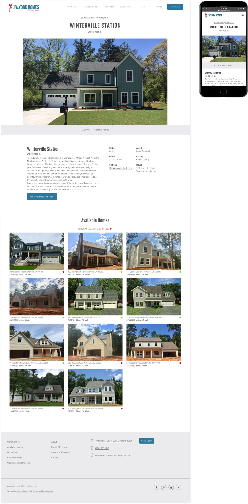

JW York’s homepage features a variety of elements. At the top, there is a slideshow that highlights parts of the website. The next/previous pagination of the slideshow is actually the cursor’s icons. These are the kind of special simple, but special, elements that I like to include in my website design. The homepage also features a welcome copy and video, list of available homes and links to important pages on the website.

Available homes
The available homes section of the JW York Homes website is a great example of how you can organize a dense amount of information for each property. The main feed of available homes features an advanced search bar that allows users to filter properties. The main feed also features a preview of each home, including important information such as price, bedrooms, bathrooms and address. The individual available homes page includes all the information for the property. This page includes a masonry view of property photos that expand to a lightbox gallery, an interactive google map, and well-laid additional home details.

Home plans
JW York Homes uses home plans to determine the layout and design of their community homes. At any given time there may be multiple homes for sale from JW York Homes with the same home plan. The main feed of home plans includes an advanced search feature and a preview of the home plan with important information. The individual home plans include a 3D rendering, basic information and floorplan images.

Communities
JW York Homes began developing communities with the addition of Winterville Station located in Winterville, GA. JW York Homes has more communities in development, and they intend for their communities to be the showcase of their business. This is because they are using their skills in custom home design and applying it to entire neighborhoods. Individual community pages feature information about the community, including the price range and school districts, as well as a list of the available homes in the community.

Additional pages to promote lifestyle and craftsmanship
Most of the JW York Homes website is curated feeds of available homes, home plans, communities and custom homes. However, additional pages were needed to establish the quality and craftsmanship of JW York Homes. These pages explain why someone should contact JW York Homes about their dream home. Some of the additional pages include notes on their environmentally friendly practices, their awards and affiliations, their team and their guarantees.